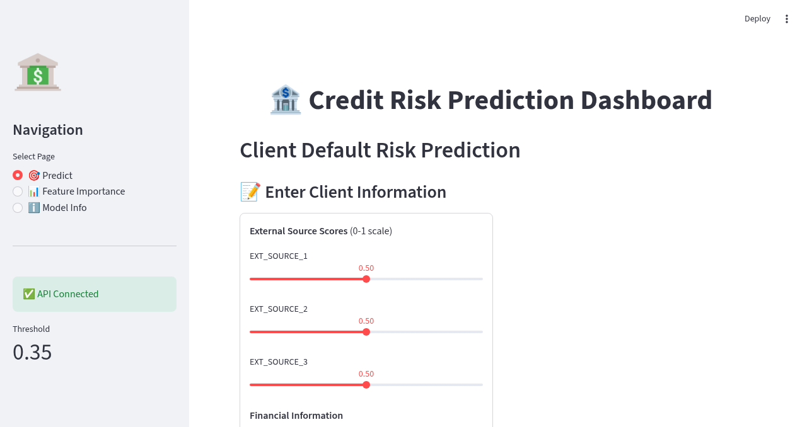
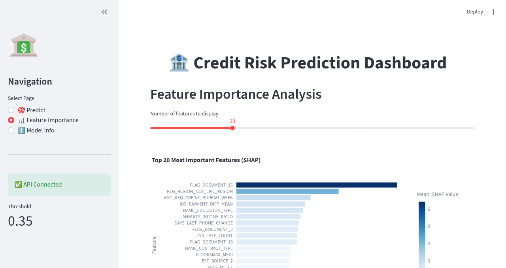
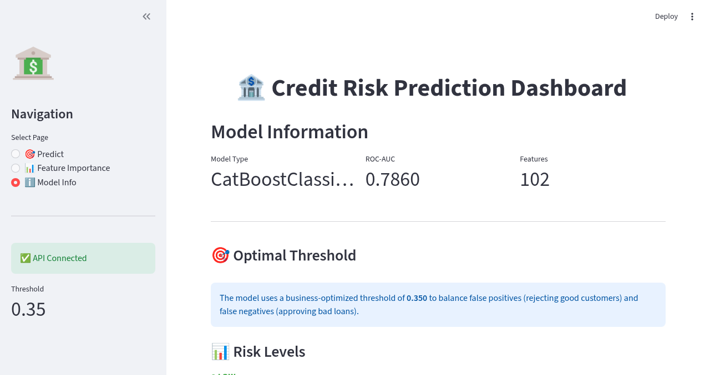
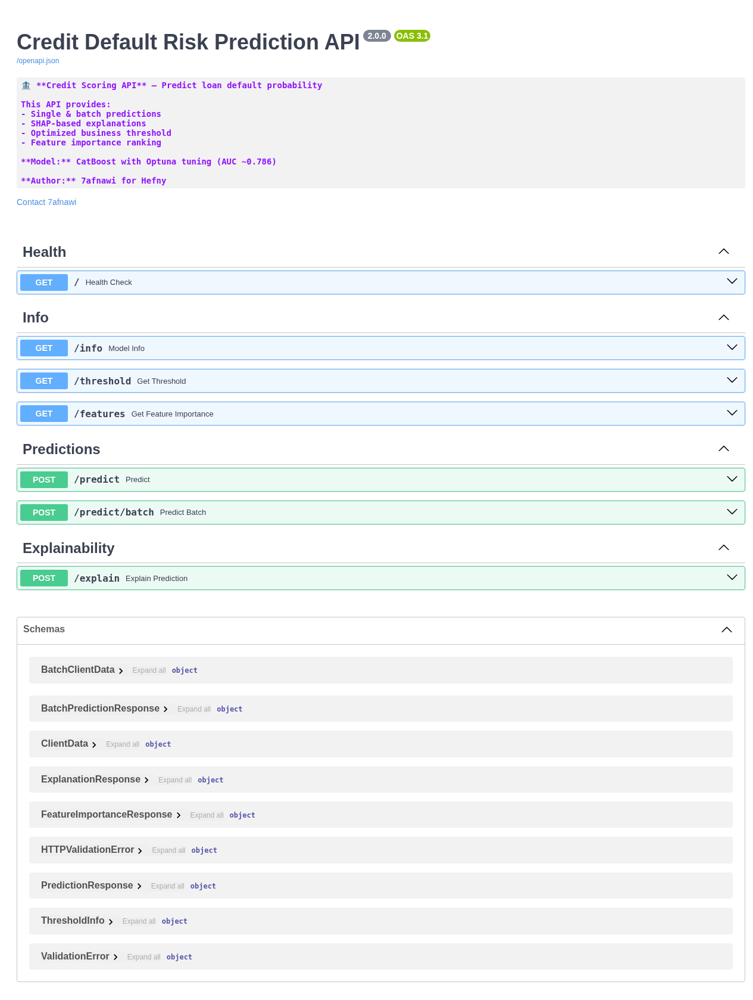

Machine Learning Pipeline for Loan Default Prediction
Demo Documentation | March 2026
Built by 7afnawi for Hefny
This system predicts the probability of a client defaulting on a loan using machine learning. It includes:
The main prediction interface allows users to input client information and get instant risk assessment.

Figure 1: Dashboard home page with client input form
SHAP-based feature importance shows which features have the most impact on predictions.

Figure 2: Top 20 most important features (SHAP values)
| Rank | Feature | Importance |
|---|---|---|
| 1 | FLAG_DOCUMENT_15 | 6.42 |
| 2 | REG_REGION_NOT_LIVE_REGION | 4.08 |
| 3 | AMT_REQ_CREDIT_BUREAU_WEEK | 2.96 |
| 4 | INS_PAYMENT_DIFF_MEAN | 2.73 |
| 5 | NAME_EDUCATION_TYPE | 2.67 |
Detailed information about the deployed model and its configuration.

Figure 3: Model information and configuration
| Parameter | Value |
|---|---|
| Model Type | CatBoostClassifier |
| ROC-AUC | 0.786 |
| Features | 102 |
| Optimal Threshold | 0.35 |
| Recall | 72% |
The system exposes a REST API with 7 endpoints for integration.

Figure 4: Swagger API documentation
| Method | Endpoint | Description |
|---|---|---|
| GET | / | Health check |
| GET | /info | Model information |
| GET | /threshold | Threshold configuration |
| GET | /features | Feature importance |
| POST | /predict | Single prediction |
| POST | /predict/batch | Batch predictions |
| POST | /explain | SHAP explanation |
The application is fully containerized with Docker Compose.
| Container | Port | Status |
|---|---|---|
| credit-risk-api | 8000 | ✅ Healthy |
| credit-risk-frontend | 8501 | ✅ Healthy |
| Test | Result |
|---|---|
| SQL Injection | ✅ PASS |
| XSS Protection | ✅ PASS |
| Input Validation | ✅ PASS |
| Container Isolation | ✅ PASS |
| Sensitive Files | ✅ PASS |